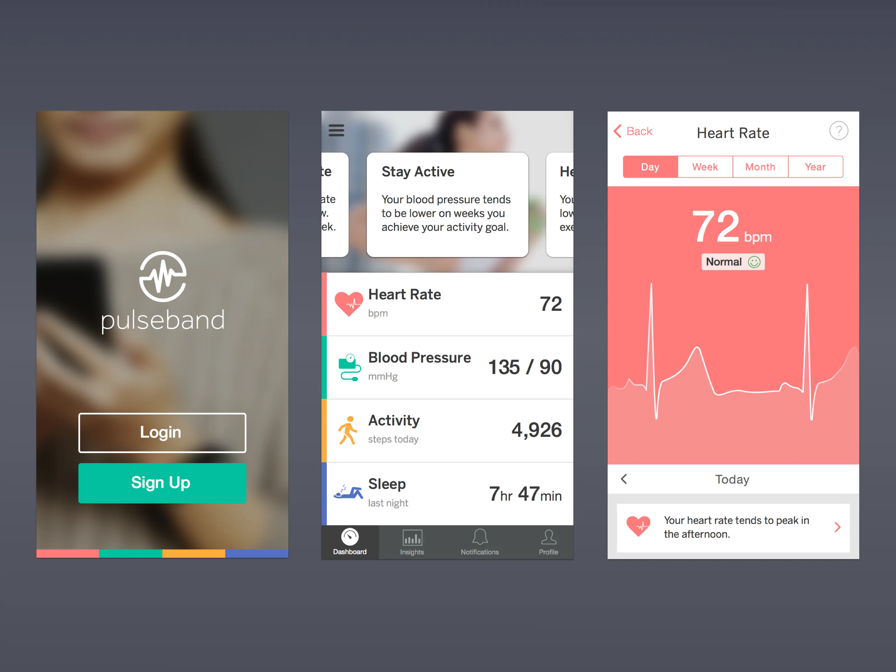

What your resting heart rate is actually telling you
A lower number isn't always a better one. Here's how to read the trend instead of getting attached to any single reading.

Most people check their resting heart rate the way they check the scale: once, in isolation, hoping for a specific number. But a single reading is a snapshot of one morning — it's shaped by how well you slept, whether you had coffee, even the temperature of the room. On its own, it tells you very little.
Why the trend matters more than the number
PulseBand logs your resting heart rate every morning and plots it over weeks, not days. What you're actually looking for is a shift: a resting rate that climbs by five or more beats per minute over several days often shows up before you consciously feel run down, stressed, or like you're getting sick.
That's the pattern we built the app around. Instead of showing you a number and letting you guess, PulseBand flags the shift directly: "Your resting heart rate is 6 bpm above your usual — this often lines up with poor recovery."
When a lower number isn't good news
Athletes chase a low resting heart rate as a fitness marker, and for good reason — a well-conditioned heart pumps more blood per beat, so it beats less often at rest. But context matters. A sudden drop paired with fatigue or dizziness is worth mentioning to a doctor, not celebrating.
This is the core idea behind PulseBand's insights: the same number can mean two very different things depending on what surrounds it. A tracker that only shows the number is asking you to do the interpretation yourself. We'd rather do that part for you.
What to actually do with this data
Check your weekly trend line, not your daily number. Notice the direction, not the digit. And when PulseBand surfaces a note about a shift, treat it as a prompt to pay attention — to sleep, to stress, to how you're training — rather than as a verdict.